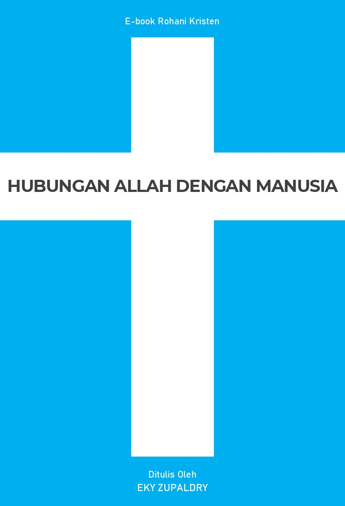
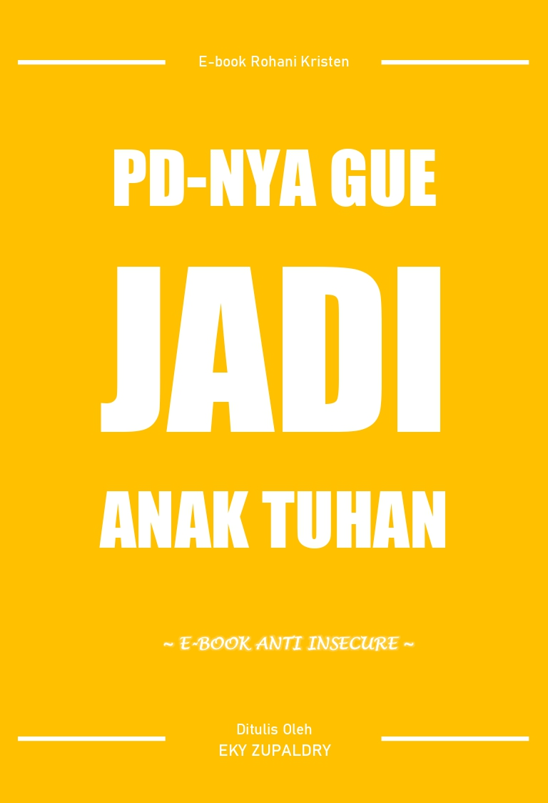
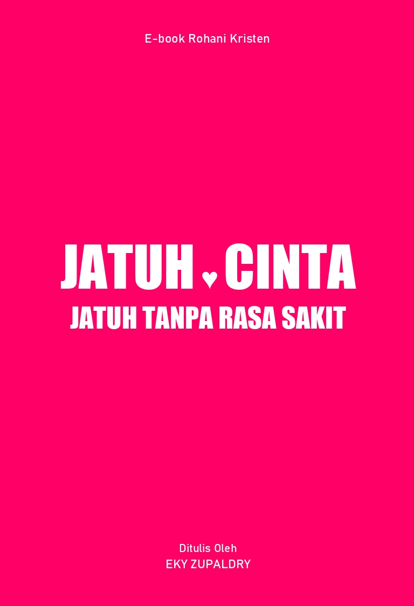
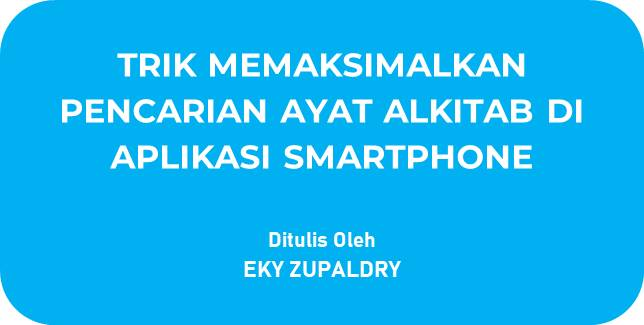
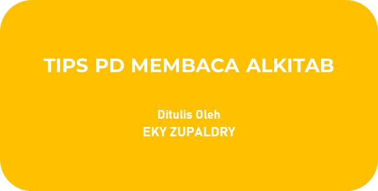

Daftar E-book
HUBUNGAN ALLAH DENGAN MANUSIA

Ringkasan
E-book ini selesai ditulis pada Mei 2021. Bermula dari sebuah pertanyaan "Bagaimana hubungan Allah dengan manusia?"
PD-NYA GUE JADI ANAK TUHAN

Ringkasan
E-book ini selesai ditulis pada Desember 2021. Berawal dari fenomena anak muda yang kurang PD terhadap dirinya sendiri dan insecure melihat privillege orang lain.
JATUH CINTA JATUH TANPA RASA SAKIT

Ringkasan
E-book ini selesai ditulis pada Juni 2022. Dimulai dari sebuah hal yang sering dibahas orang, yakni cinta. Sebagai orang Kristen, apakah kita benar-benar telah jatuh cinta dan menyatakannya kepada Tuhan Yesus?
Tips & Trik
TRIK MEMAKSIMALKAN PENCARIAN AYAT ALKITAB DI APLIKASI SMARTPHONE

Ringkasan
E-book ini selesai ditulis pada Mei 2021. Berisi Trik bagi teman-teman yang sering menggunakan Aplikasi Alkitab di Smartphone untuk memaksimalkan pencarian ayat-ayat tertentu dalam Alkitab.
TIPS PD MEMBACA ALKITAB

Ringkasan
E-book ini selesai ditulis pada Desember 2021. Berisi Tips bagi teman-teman yang ingin menjadikan Membaca Alkitab tidak hanya sekedar gaya hidup, tetapi menjadi kebutuhan hidup kerohanian.